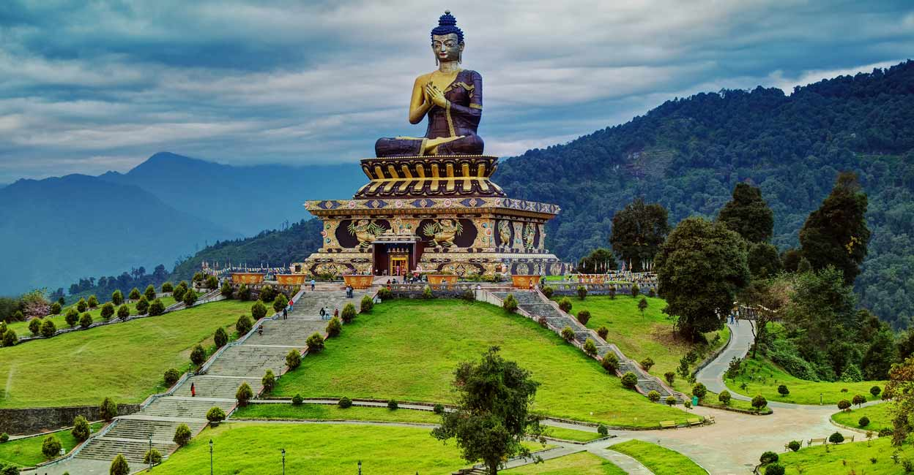
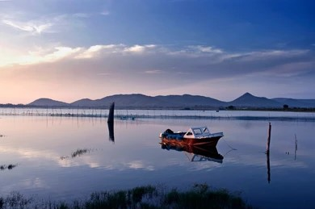
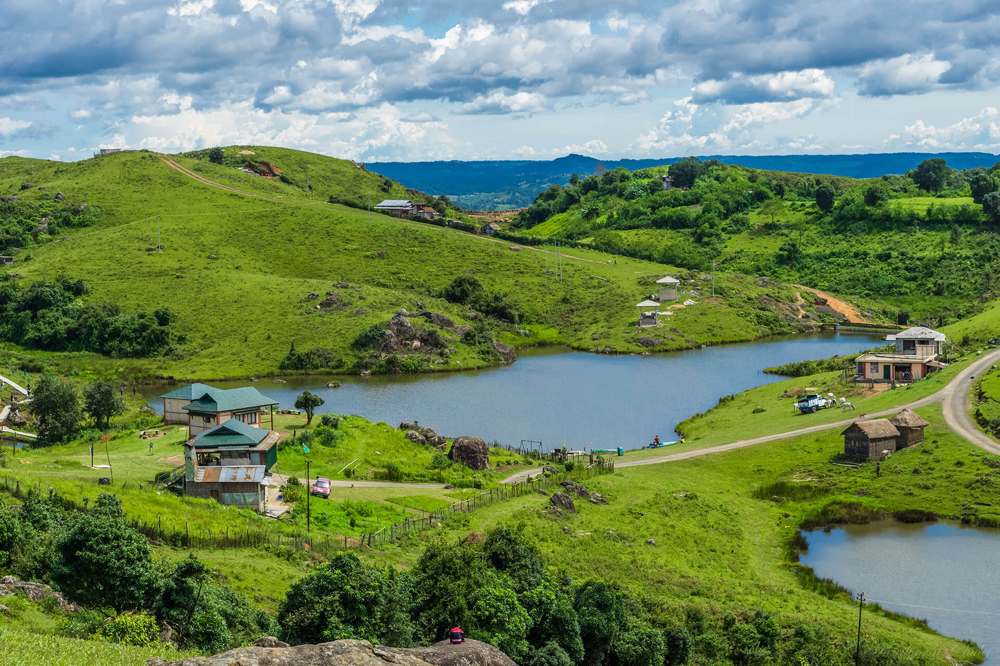
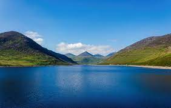
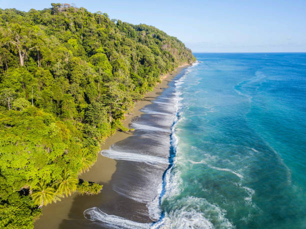
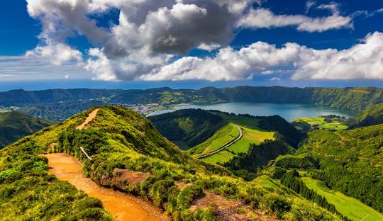

Buddha Park, Ravangla, Sikkim
Click Here
Khirganga National Park, Himachal Pardesh
Click Here

Chilika Lake, OdishaClick Here

Nongkhnum Island Beach, MeghalayaClick Here

Silent Valley, KeralaClick Here

Corcovado National Park, Costa RicaClick Here

Click Here

Azores, PortugalClick Here

Click Here

Click Here